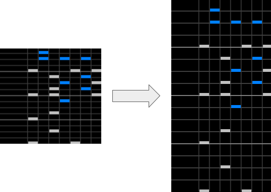
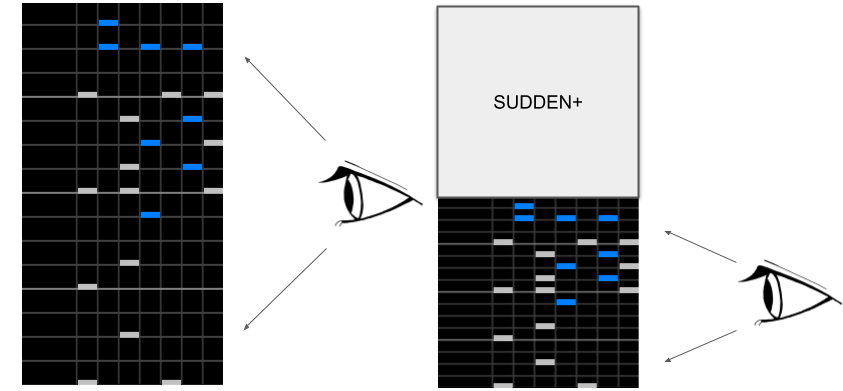
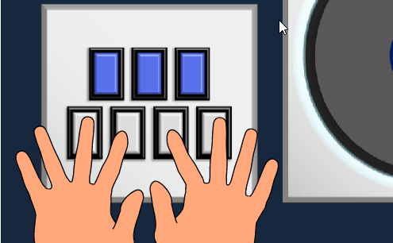
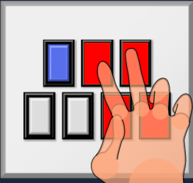
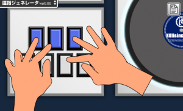
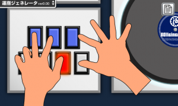

📑 文章目录（18 节）
- 先购买一张 e-AMUSEMENT PASS 吧
- 各游戏模式详解
- 推荐新手首选的“STEP UP 模式”
- 当能通关 ☆8 时转向“STANDARD 模式”
- 检验自身实力的“段位认定模式”
- 限时内不限曲数畅玩的“PREMIUM FREE 模式”
- 进阶诀窍 1：设置合适的游戏选项
- 学会使用倍速（Hi-Speed）选项
- 从“初学者选项”毕业
- 开启 SUDDEN+（上遮罩）
- 绿数字先从 400 左右起步，习惯后再逐步调小
- 进阶诀窍 2：掌握标准指法（基准手位）
- 进阶诀窍 3：在家中持续练习
- 宅家练习方式①：INFINITAS
- 宅家练习方式②：ULTIMATE MOBILE
- 宅家练习方式③：读谱研究
- 宅家练习方式④：手指灵活性训练
- 享受乐趣最重要
- 💬 评论区答疑
本文面向刚开始游玩 beatmania IIDX（弐寺）的新手玩家（入坑第 3 天～三段左右），系统讲解必备基础知识与进阶诀窍。
由于基础玩法操作和选项界面说明在此略过，建议结合官方新手引导页面一并阅读。
先购买一张 e-AMUSEMENT PASS 吧
e-amusement pass 是 KONAMI 旗下街机通用的数据卡。在摆有对应机台的街机厅里，通常花 300 日元左右就能买到。
刷卡游玩可以保存个人选项设置与通关灯（Clear Lamp），还能添加好友为竞争对手（Rival）。（注：添加 Rival 及部分自定义功能需开通 e-amusement 基础会员课程。）
此外，也可以直接用交通 IC 卡（如 Suica、ICOCA 等）或支持对应功能的手机来代替 e-amusement pass。
各游戏模式详解
IIDX（弐寺）的主要游玩模式有以下 4 种。（此外还有其他模式，这里暂且略过。）
- STEP UP 模式（面向新手）
- STANDARD 模式（基础常规模式）
- 段位认定模式（实力测试）
- PREMIUM FREE 模式（限时包时模式）
推荐新手首选的“STEP UP 模式”
STEP UP 模式会自动根据玩家当前实力生成一个包含 20 首曲目的“课题曲”文件夹。
该模式自带全曲保底机制，就算没能过关也一定能进入下一首。*
对于“曲库太多不知道该选哪首……”的新手来说也非常友好。
※在 STANDARD 与段位认定模式中，一旦中途阵亡通常就会直接结束游戏
当能通关 ☆8 时转向“STANDARD 模式”
STANDARD 是 IIDX 的核心基础模式。顺利通关歌曲可玩 3 首，若满足特定条件还能触发 EXTRA STAGE 甚至 ONE MORE EXTRA STAGE，最多能玩 5 首。
不过 ONE MORE EXTRA 的触发条件较为严苛，基本当作可以玩 4 首的模式来看待就行。
从 STEP UP 过渡到 STANDARD 的参考节点，大致是“能用 ASSIST EASY 通关 ☆8 曲目”的水平。
这是因为进入 EXTRA STAGE 的条件之一为“在 FINAL STAGE 取得 ☆8～12 的 ASSIST CLEAR 及以上评价”，如果还打不过 ☆8，玩保底 3 首的 STEP UP 会更划算。
检验自身实力的“段位认定模式”
段位认定是一项连续挑战 4 首曲目的实力测试模式，只要撑到最后通关即可合格拿段。
段位体系从 7 级到 1 级 → 初段到十段 → 中传 → 皆传逐级晋升。
熟悉游戏之后，不妨积极向更高段位发起挑战，最终以“皆传”为目标努力吧。
关于初段〜五段的实力标准与课题曲列表，详见下面这篇文章。
限时内不限曲数畅玩的“PREMIUM FREE 模式”
PREMIUM FREE 模式（简称 P-FREE）是在规定时间内独占机台自由游玩的包时模式（时长与收费因门店而异）。
由于每首都打完整首的性价比偏低，这个模式主要用于冲刺 HARD 通关或冲击全连（FC）时反复重开使用。
进阶诀窍 1：设置合适的游戏选项
学会使用倍速（Hi-Speed）选项
还没用过倍速（Hi-Speed）选项的新手，请尽快适应这个功能。
开启倍速后，虽然谱面下落速度会变快，但音符之间的纵向间距会被拉开，反而更容易看清谱面。

在游玩界面按住 START 键的同时，按黑键可提高 1 档倍速，按白键可降低 1 档倍速。（在初学者选项模式下也可直接在选曲界面调整。）
下文会详细说明，新手阶段推荐将绿数字设在 400 左右。（如果觉得太快，可以先调大绿数字，再循序渐进适应。）
具体操作方法建议同步查阅官网说明。
参考：倍速选项 – beatmania IIDX 28 BISTROVER
关于倍速的种类和调速手法，可参阅下面这篇专题讲解。
从“初学者选项”毕业
熟悉游戏基本流程之后，就可以从“初学者选项（Beginner Option）”切换到“通常选项（Normal Option）”了。
在呼出选项窗口的状态下按下 EFFECT 键，即可在“初学者选项”⇔“通常选项”之间自由切换。
各项选项的具体功能请结合官网页面一并查看。
参考：游戏选项 – beatmania IIDX 28 BISTROVER
开启 SUDDEN+（上遮罩）
切到通常选项后，在“谱面显示区域（7 键）”中开启“SUDDEN+”。
“SUDDEN+”常被称为“SUD+（上遮罩/挡板）”或“轨道挡板（Lane Cover）”，通过遮住谱面上方区域，能让你更容易保持视线固定。大约九成的高手都在使用这一选项。

在相同绿数字的前提下，搭配 SUD+（上遮罩）会让实际的物理滚动速度变慢，从而减轻液晶屏幕带来的残影感。
大多数玩家会遮挡轨道上方约 1/3～1/2 的长度。
不过遮得太低会导致低速段不易看清等弊端，如果拿不准，可以先从白数字 200 左右开始摸索微调。

新手经常会问一个问题：“到底应该盯着屏幕哪个位置看才好？”
虽然因人而异，但笔者认为“在余光能扫到判定文字（GREAT 等）的前提下，尽量往上方看”是最理想的状态。
因为看得太靠上会看不到判定反馈、不知道自己哪里失误了；而看得太靠下则会来不及反应后续谱面。
打游刃有余的曲子时，有时也会把视线跟到判定线附近去抠准度（俗称“目押”），但新手阶段完全没必要过分纠结准度。
绿数字先从 400 左右起步，习惯后再逐步调小
所谓绿数字，指的是音符从出现到落至判定线的显示时间（绿数字）数值。

总体来说，绿数字越小，同屏信息量越少、谱面越清晰，但如果缩得过小，身体和眼睛就会反应不及。
新手阶段建议定在 400～500 左右，给自己留出余地去留意指法（运指）和键位位置。等对手型指法熟练之后，再一点点加快流速。
虽然未做过精确统计，但总体趋势是段位越高、绿数字越小。（高阶玩家的平均值大概在 260 左右。）
参考：Twitter 话题标签 #弐寺のあなたの段位と緑数字教えてください
流速绝不是越快越好，如果明显感觉到反应慢半拍，请果断调大绿数字。
本博客虽然时常强调“常挂 RANDOM（乱）”，但那是面向遇到瓶颈的中高阶玩家的建议，新手阶段完全不用在意。
尤其是如今曲库比早年庞大得多，光打正规谱面就已经能练到各式各样的键型配置了。
进阶诀窍 2：掌握标准指法（基准手位）
在学习具体指法（运指）之前，先决定自己玩 1P 侧还是 2P 侧吧。
新手非常容易陷入下面这种基准手位误区。

这种摆法明显很弱，一定要改掉。
首先，要有意识地把远离转盘（皿）的那只手固定成下图的手型。


IIDX 中有着各种各样带名字的指法体系，但无论哪种指法，远离转盘那只手的基本手型都是这样。（最外侧键用小指还是无名指则看个人喜好。）
靠转盘（皿）侧的手在初期可以先自由移动，熟练之后建议掌握“1048式”以及用于处理皿复合的“3:5 半固定”。


特别是“1048式”后续非常方便衔接进阶技巧“手腕搓盘（手首皿）”，尽早熟悉绝对不亏。
关于各类指法的详细介绍，请阅读下面这篇文章。
进阶诀窍 3：在家中持续练习
只要把环境搭好，就能随时在家尽情练习 IIDX。
宅家练习方式①：INFINITAS
INFINITAS 是面向 PC 推出的家用版 beatmania IIDX。每月 1,628 日元即可无限畅玩基础曲库（另售追加曲包）。
只要备齐一台性能达标的 PC 和专控/手台，就能随时在家打 IIDX，非常有吸引力。
搭建 INFINITAS 环境所需的器材配置，详见以下几篇文章。
INFINITAS 的入门步骤与收费说明整理在下面这篇文中。
想扩充曲库时，曲包一览与价格信息可参考这篇。
宅家练习方式②：ULTIMATE MOBILE
“IIDX ULTIMATE MOBILE”是 beatmania IIDX 的官方手机版 App。
在目前能买到的控制器中，它仅支持具备蓝牙连接功能的“入门版专控（Entry Model）”（不接控制器则使用触屏操作）。
基础游玩免费，畅玩至 HYPER 难度为月费 480 日元，无限制畅玩全难度为月费 980 日元（均为含税价，截至 2026 年 11 月）。
也可以开启谱面自动演奏（Auto Play）来做脑内演练（意象训练）。
包括 INFINITAS、手机版和 PS2 家用版在内，所有可在家游玩的 beatmania 作品都在下面这篇文章中做了盘点。
关于 ULTIMATE MOBILE 免费范围与各月费套餐的差异，详见这篇解析。
宅家练习方式③：读谱研究
翻看没打过的谱面进行拆解研究或脑内演练，同样是非常有效的练习手段。
可以用 ULTIMATE MOBILE 播放自动演奏，或者去 YouTube 观看谱面演示视频。
借助谱面网站静下心来细看配置也很棒。请务必把几乎所有 IIDX 玩家都离不开的谱面站“TexTage”加入浏览器书签。
本博客也借用了大量该站的谱面图片，万分感谢。
宅家练习方式④：手指灵活性训练
笔者个人其实属于“打音游不需要专门练肌肉或指力（只要持续游玩，所需肌肉自然会长出来）”一派，但如果你确实想额外锻炼手指，市面上也有下面这类训练小器材。
空闲时拿在手里捏一捏，或许能让手指更听使唤。
关于手指动不了、跟不上时的原因与针对性练法，可参阅这篇文章。
享受乐趣最重要
虽然前面介绍了不少基础要点，但归根结底，“玩得开心！”才是最重要的。
在我看来，IIDX（弐寺）是一款能让人直观享受“演奏感”与“成长历程”的绝佳游戏。啪啪拍打键位既畅快解压，打出亮眼成绩时更是令人热血沸腾。
而且当自己思考并坚持下来的练习真正转化为实实在在的进步时，那种成就感无与伦比。
每个人的玩法乐趣各不相同，请找到最适合自己、能够长久坚持下去的享受方式吧。
遇到瓶颈期时，不妨抽空读一读“IIDX 进阶提示汇总”换换脑子。
以上就是本次的“IIDX（弐寺）新手指南”。
💬 读者评论与作者答疑（2 组对话）